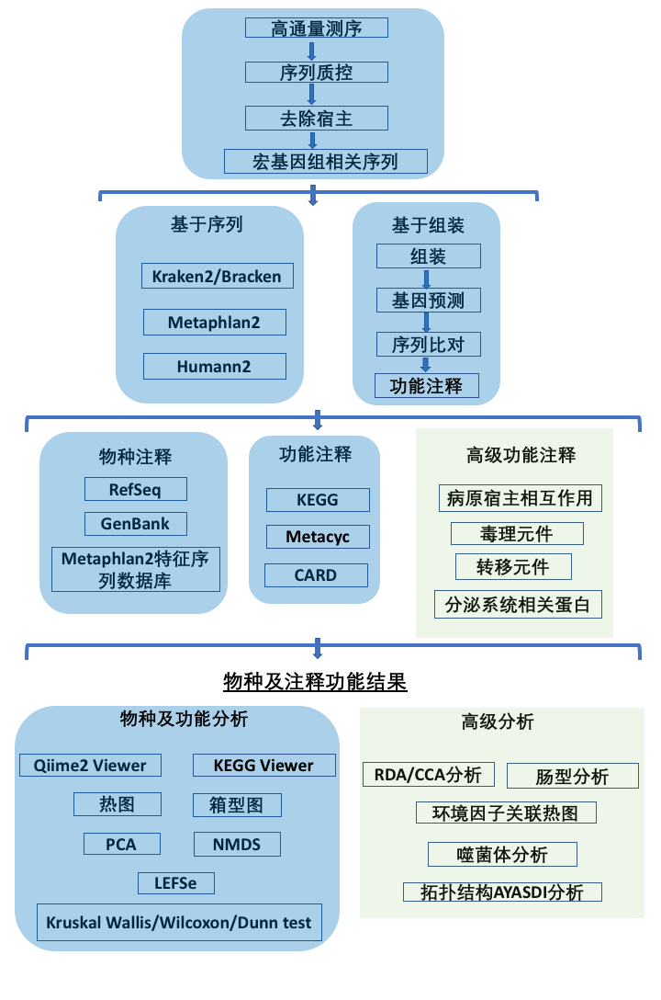

温馨提示：请使用火狐或者Chrome的网页浏览器来查看报告
宏基因组_样本_结题报告
一 概述
微生物世界是分子多样性最大的天然资源库，基于菌株水平的传统分离培养技术为人们认识微生物多样性提供了可能，但是据估计自然界中超过99%的微生物不能通过传统的分离培养技术获得其纯培养，从而导致环境微生物中的多样性基因资源难以被发现。许多重要的微生物我们还不能识别，随着微生物活性产物的广泛研究和深入开发利用，从环境微生物中筛选到新活性物质的几率将逐步下降。而如何开拓利用环境微生物新资源是微生物研究的重要课题。为此研究者们开发了多种以特定环境微生物为研究对象的高通量测序方法。[1-3]
宏基因组学(Metagenomics)，是一种直接对微生物群体中包含的全部基因组信息进行研究的手段。宏基因组学绕过对微生物个体进行分离培养，应用基因组学技术对自然环境中的微生物群落进行研究的一门学科。它规避了对样品中的微生物进行分离培养，提供了一种对不可分离培养的微生物进行研究的途径，更真实的反应样本中微生物组成、互作情况，同时在分子水平对其代谢通路、基因功能进行研究。近年来，随着测序技术和信息技术的快速发展，利用新一代测序技术(Next Generation Sequencing)研究 Metagenomics，能快速准确的得到大量生物数据和丰富的微生物研究信息，从而成为研究微生物多样性和群落特征的重要手段。细菌基因组相对较小，通常仅有一条环状DNA和质粒，通过高通量测序，可以了解其全部遗传信息。这也已经成为微生物研究的重要手段之一，为细菌的遗传进化、疾病预防与治疗、疫苗与抗生素的开发等提供重要的信息。如致力于研究微生物与人类疾病健康关系的人体微生物组计划(HMP, Human Microbiome Project, http://www.hmpdacc.org/ )，研究全球微生物组成和分布的全球微生物组计划(EMP, Earth Microbiome Project, http://www.earthmicrobiome.org/ )都主要利用高通量测序技术进行研究。[4-6]
二 项目流程
2.1 实验流程
图2-1 实验工作流程图
2.2 信息分析流程
分析流程主要步骤(图2-2)：
1) 数据质控：测序得到的原始数据会存在一定比例的低质量数据，为了保证后续信息分析结果的准确可靠，首先要对原始数据进行质控及宿主过滤，得到有效数据。分析中将使用Cutadapt去除原始数据中为彻底清除的Illumina接头序列，再用PrinSEQ去除低质量的序列片段和个别序列。每一步质控前和分析结束后，都会用FastQC来检测质控的合理性和效果。[7，8]
2) 去除宿主：质控处理后的数据通过bowtie2比对到宿主的基因组，没有比对到的序列被保留下来做后续分析。
3）物种注释：使用Kraken2和自建的细菌数据库来鉴别样本中所含有的物种，再用Bracken来对样本中物种的实际相对丰度进行预测。相对于基于组装的物种注释，基于序列的宏基因组物种注视方法会比较准确。[9-12]
4) 宏基因组组装：从各样品质控并除宿主后的序列出发，用Megahit进行宏基因组组装，并将各样品未被利用上的序列放在一起进行混合组装，以期发现样品中的低丰度物种信息。[13-15]
5) 基因预测：从单样品和混合组装后的contigs出发，采用Prodigal进行基因预测得到ORF序列，并将各样品和混合组装预测产生的基因放在一起，用CD-HIT进行去冗余，构建所有样本预测基因的代表序列。从预测基因代表序列出发，综合各样品的去处宿主后的序列，可获得所有预测基因在在各样品中的丰度信息。[16-18]
6) 常用功能数据库注释：从预测基因的代表序列出发，进行代谢通路(KEGG)的功能注释和丰度分析。[19-21]
7) 基于物种丰度表和功能丰度表，可以进行丰度聚类分析，PCoA和NMDS降维分析，样品聚类分析；当有分组信息时，可以进行LEfSe多元统计分析以及代谢通路比较分析，挖掘样品之间的物种组成和功能组成差异。[22，23]
8) 抗性基因注释：利用预测基因的代表序列与抗生素抗性基因数据库CARD进行注释，可以获得抗性基因丰度分布情况以及这些抗性基因的物种归属和抗性机制。[24-25]
9) 另外，还可以基于标准分析结果，进行一系列高级信息分析（如 CCA/RDA 分析，肠型分析，病原与宿主互作数据库(PHI)注释，分泌蛋白预测，III型分泌系统效应蛋白预测，细菌致病菌毒力因子(VFDB)注释，转移元件分析（MGE）等，更多详细信息请查看微科服宏基因组高级信息分析说明）；同时，结合环境因子、病理指标或特殊表型进行深入关联研究，能够为进一步深入研究和利用样品的物种和功能提供理论依据。[26-28]

图2-2 信息分析流程图
三 测序数据预处理 (1-QCStats目录)
本项目采用Illumina MiSeq平台对测序样本进行双端测序。基于FASTQ格式的测序文件是一种存储序列信息的特定文件，推荐用Notepad++等文本编辑器或者在电脑终端中打开。FASTQ文件每四行对应一条测序Read：第一行以符号“@”起始，对应于序列ID和相应的描述信息；第二行为实际测得的碱基序列；第三行以符号“+”起始；而第四行的字符串则记录了第二行序列中每个碱基所对应的测序质量（详见 https://en.wikipedia.org/wiki/Fastq）。
采用 Illumina测序平台测序获得的原始数据(Raw Data)存在一定比例低质量数据，为了保证后续分析的结果准确可靠，需要对原始的测序数据进行预处理，获取用于后续分析的有效序列(Clean Data)。测序数据预处理统计结果见表 3-1。。具体处理步骤如下：
1) 去除所含低质量碱基（质量值≤38）超过一定比例（默认设为 40bp）的 reads；
2) 去除 N 碱基达到一定比例的 reads（默认设为10bp）；
3) 去除与 Adapter 之间 overlap 超过一定阈值（默认设为 15bp）的 reads；
| Sample | Raw Reads | Clean Reads | Raw Base(G) | Clean Base(G) | Effective Rate(%) | Error Rate(%) | Q20(%) | Q30(%) | GC Content(%) |
|---|---|---|---|---|---|---|---|---|---|
| SS1a | 24,563,840 | 24,521,817 | 7.37 | 7.36 | 99.83 | 0.04 | 95.41 | 88.72 | 43.06 |
| SS2b | 22,797,872 | 22,688,129 | 6.84 | 6.81 | 99.52 | 0.03 | 96.52 | 91.26 | 42.16 |
| SS4d | 31,875,207 | 31,810,969 | 9.56 | 9.54 | 99.8 | 0.03 | 96.94 | 91.83 | 43.19 |
| SS6f | 24,768,253 | 24,741,220 | 7.43 | 7.42 | 99.89 | 0.03 | 95.94 | 89.56 | 46.55 |
表3-1 数据产出质量情况一览表
上述的处理步骤均是对 Read 1 和 Read 2 进行操作。在得到有效数据之后，为了确保序列的准确性，将使用Cutadapt为彻底清除数据中的Illumina接头序列（有效数据通常仍会含有部分比例的接头和低质量序列），再用PrinSEQ去除低质量的序列片段和个别序列。每一步质控前和分析结束后，都会用FastQC来检测质控的合理性和效果。样品通常存在宿主污染，因此会与宿主序列进行比对，过滤掉可能来源于宿主（采用Bowtie2）的序列；FastQC每一步的结果统计信息可以通过点击此处打开新窗口查看。
四 物种的注释与评估(2-TaxaAundanceAnalysis目录)
4.1 物种组成分析
为了研究样品物种组成及多样性信息，我们用Krken2对所有样品的全部的有效序列进行注释分类。Kraken2是基于Kraken1后研发的的最新版本（2018）。Kraken系列软件是一种使用精确k-mer匹配的分类系统，可实现高精度和快速分类速度。该分类器将查询序列中的每个k聚体与包含给定k聚体的所有基因组的最低共同祖先（LCA）匹配。 Kraken2在Kraken1的基础上提供了重大改进，达到了数据库构建时间更短，数据库大小更小和分类速度更快的效果。在使用完Kraken对宏基因组测序数据进行分类。我们继续用Bracken对Kraken2得到的分类结果进行分类后贝叶斯重新估算丰度来估算宏基因组样本的物种水平或属级丰度。[29,30]
基于Bracken结果的绝对丰度及注释信息，对每个样品在一共7个分类水平界门纲目科属种(Kingdom,Phylum,Class,Order,Family,Genus,Species)上的序列数目占总序列数的比例进行统计，可以有效的评估样本的物种注释分辨率（注释到属/种的比例越高表示样本的注释效果越好），图4-1展示了每个样本中在各分类水平注释的相对程度:

图 4-1 各个样品在各分类水平上的序列注释程度柱形图
图4-2展示了样本中物种在不同分类水平相对分布情况的柱形图:
图 4-2 各个样本在各分类水平的物种相对分布情况的柱形图（全部物种，点击此处打开新窗口查看）

图 4-2 (补充) 各个样品在门水平上的相对分布情况柱形图（相对丰度前20的物种）
除了通过网页版报告，用户也可以通过本地文件夹查看结果。结果目录下的文件详细解释请参考./Result_README.pdf文件。结果文件夹中包含的.qzv文件是Qiime2的专属可视化文件格式，可以通过网页https://view.qiime2.org/进行交互性查看，也可以直接点开相应的qzv解压缩文件夹通过网页形式直接点开HTML文件“Summary_请点此文件查看.html”查看。网页报告只选取了部分代表性信息用于引导用户阅读，然而本地文件夹的结果目录中包含了大量其他有用的信息，请用户自行查看。
为了研究不同样品间的相似性，还可以通过对样品进行聚类分析从而构建样品的聚类。选取关注分类水平的物种（默认选取物种绝对丰度大于1000）实现样品聚类（纵向聚类），以此考察不同样品或者分组间的相似或差异性（此处为门水平分类的热图），并从分类信息和样品间差异两个层面进行横向聚类，寻找物种或样本的聚集规律。[31-33]
4.2 组间OTU差异显著性分析
ANCOM(Analysis of composition of microbiomes)是专门用于比较微生物组学数据中物种在组间的显著性差异的分析方法。[34]ANCOM分析不依赖于数据的分布假设，并解决了在其他方法中相对丰度分析所带来的限制，从而能够有效降低结果的假阳性。从下面链接中我们可以得知属水平分类的物种在组间表现了丰度的显著差异：
点击此处查看物种属水平分类的ANCOM丰度比较结果（点击此处打开新窗口查看）
LEfSe寻找每一个分组的特征微生物（默认为LDA>2的微生物）[19]，也就是相对于其他分组，在这个组中丰度较高的微生物（如图4-3。完整的差异性分析结果请见结果部分./2-AundanceAnalysis/2-AbundanceComparison/。

图4-3 LEfSe分析LDA柱形图
4.3 样品共有物种分析
对于样本间，根据OTU是否存在来寻找样本之间的特有或共有的OTU，对于分组较少（小于等于5）的实验方案，我们绘制韦恩图（Venn diagram）分析不同样品组之间特有或共有的OTU，用于统计多个样本中所共有和独有的OTU数目，可以比较直观的表现样本在OTU水平上的组成相似性及重叠情况（图4-3）。对于分组较多的（大于等于3），我们绘制了花瓣图，花瓣图中，花瓣里是对应分组特有的OTU数目，中心是所有分组共有的OTU数目。同时也给出了特有和共有的OTU种类，注释情况及丰度，丰度较高且特有的OTU具有重要分析价值，请参见 ./2-AbundanceAnalysis/3-VennAndFlower

图4-4 共有或特有物种韦恩图展示（当分组数目小于等于5时）
查看各分类水平的物种在各个样本的分布情况请点击./2AundanceAnalysis/1-AbundanceSummary/1-AbundanceTable/3-CollapsedStats/。
4.4 样品多样性指数分析
目前适用于生态学研究的降维分析主要是主成分分析 (PCA，Principal Component Analysis)和无度量多维标定法（NMDS，Non-Metric Multi-Dimensional Scaling）分析。其中，PCA是基于线型模型的一种降维分析，它应用方差分解的方法对多维数据进行降维，从而提取出数据中最主要的元素和结构；PCA 能够提取出最大程度反映样品间差异的两个坐标轴，从而将多维数据的差异反映在二维坐标图上，进而揭示复杂数据背景下的简单规律。而NMDS是非线性模型，其目的是为了克服线性模型的缺点，更好地反映生态学数据的非线性结构，应用NMDS分析，根据样本中包含的物种信息，以点的形式反映在多维空间上，而不同样本间的差异程度则是通过点与点间的距离体现，能够反映样本的组间或组内差异等。 基于不同分类层级的物种丰度表，我们进行了PCA和NMDS分析，如果样品的物种组成越相似，则它们在PCA和NMDS图中的距离则越接近。[37]详细的数值可以查看结果目录./2-TaxaAundanceAnalysis/3-DiversityAnalysis/PCoA-NMDS。完整的差异性分析结果请见结果部分。
主坐标分析（PCoA），是一种与PCA类似的降维排序方法，从多维数据中提取出最主要元素和结构能够提取出最大程度反映样品间差异的三个坐标轴，从而将多维数据的差异反映在三维坐标图上，进而揭示复杂数据背景下的简单规律。区别在于PCA是基于样品的相似系数矩阵来寻找主坐标，而PCoA是基于距离矩阵来寻找主坐标。我们基于Bray Curtis距离来进行PCoA分析，并选取贡献率最大的主坐标组合进行作图展示，图中样品的距离越接近，表示样品的物种组成结构越相似。分析结果文件夹分别提供了PCoA的2D和3D图，方便选择使用。[35,36]
图4-5 基于Bray Curtis距离矩阵的的PCoA 3D图（点击此处打开新窗口查看图片可拖动旋转，可调色）
目前适用于生态学研究的降维分析主要是主成分分析 (PCA，Principal Component Analysis)和无度量多维标定法（NMDS，Non-Metric Multi-Dimensional Scaling）分析。其中，PCA是基于线型模型的一种降维分析，它应用方差分解的方法对多维数据进行降维，从而提取出数据中最主要的元素和结构；PCA 能够提取出最大程度反映样品间差异的两个坐标轴，从而将多维数据的差异反映在二维坐标图上，进而揭示复杂数据背景下的简单规律。而NMDS是非线性模型，其目的是为了克服线性模型的缺点，更好地反映生态学数据的非线性结构，应用NMDS分析，根据样本中包含的物种信息，以点的形式反映在多维空间上，而不同样本间的差异程度则是通过点与点间的距离体现，能够反映样本的组间或组内差异等。 基于不同分类层级的物种丰度表，我们进行了PCA和NMDS分析，如果样品的物种组成越相似，则它们在PCA和NMDS图中的距离则越接近。[37]详细的数值可以查看结果目录./2-TaxaAundanceAnalysis/3-DiversityAnalysis/PCoA-NMDS。完整的差异性分析结果请见结果部分。
五 宏基因组组装(3-Assembly目录)
5.1 宏基因组组装基本步骤
宏基因组的组装的目的就是对这些短的序列进行组装、拼接，最终尽可能的恢复样本中微生物物种的基因组图谱。组装一般分为三个层次，contig, scaffold和chromosomes. contig表示从大规模测序得到的短读(reads)中找到的一致性序列。组装的第一步就是从短片段(pair-end)文库中组装出contig。进一步基于不同长度的大片段(mate-pair)文库，将原本孤立的contig按序前后连接，其中会调整contig方向以及contig可能会存在开口(gap,用N表示)，这一步会得到scaffolds,就相当于supercontigs和meatacontigs。最后基于遗传图谱或光学图谱将scaffold合并调整，形成染色体级别的组装(chromosome)。宏基因组样本中，因为存在成百上千的微生物物种，在现有的测序深度下，通常很难得到完整的基因组。本流程使用Megahit来组装拼接contigs用于后续的基因功能分析。
1）经过预处理后得到R1和R2序列，通过脚本找到仍然匹配的序列，使用 Megahit 组装软件进行paired-end组装分析；
2）将不匹配的序列以及没有用于第一轮组装的序列混合组装。
3）对于单样品和混合组装生成的Contigs，过滤掉 1000bp以下的片段，并进行统计分析和后续基因预测；
4）用QUAST来对组装后的Contigs进行评估。[38]
5.2 Contigs基本信息统计
更多组装所得的Contigs序列信息以及相关统计信息可以通过点击此处在结果./3-Assembly/文件夹中查看
六 基因预测及丰度分析(4-ORFPrediction目录)
6.1 基因预测及丰度分析基本步骤
基因预测是通过识别DNA序列上的具有生物学特征的片段来预测基因在染色体或DNA片段上的位置。基因识别的对象主要是蛋白质编码基因，也包括其他具有一定生物学功能的因子，如RNA基因和调控因子。基因识别是基因组研究的基础。
1）从各样品及混合组装的 Scaftigs（>=1000bp）出发，采用 Prodigal 进行 ORF (Open Reading Frame) 预测，并从预测结果出发，过滤掉长度小于 100nt的信息。prodigal的全称是ProkaryoticDynamic Programming Genefinding Algorithm，原核的动态编程基因查找算法，prodigal主要应用于细菌和古生菌的基因预测，如果要对meta样品做基因预测，prodigal还专门提供了meta的版本。[39]
2）对各样品及混合组装的 ORF 预测结果，采用 CD-HIT软件进行去冗余，以获得非冗余的预测基因序列，默认以 identity 95%, coverage 90% 进行聚类，并选取最长的序列为代表性序列。
3）采用 BWA，将各样品的有效序列比对至初始预测基因的代表序列，计算得到基因在各样品中比对上的序列数目，得到相对丰度值；
4）基于中各基因在各样品中的丰度信息，进行基本信息统计，core-pan 基因分析，样品间相关性分析，及基因数目韦恩图分析。
6.2 预测基因基本信息统计

图6-1 预测基因基本信息
七 KEGG功能数据库注释(5-FuctionAnalysis目录)
7.1 KEGG数据库介绍
KEGG 数据库于 1995 年由 Kanehisa Laboratories 推出 0.1 版，目前发展为一个综合性数据库，其中最核心的为 KEGG PATHWAY 和 KEGG ORTHOLOGY 数据库。在 KEGG ORTHOLOGY 数据库中，将行使相同功能的基因聚在一起，称为 Ortholog Groups (KO entries)，每个 KO 包含多个基因信息，并在一至多个 pathway 中发挥作用。而在 KEGG PATHWAY 数据库中，将生物代谢通路划分为 6 类，分别为：细胞过程（Cellular Processes）、环境信息处理（Environmental Information Processing）、遗传信息处理（Genetic Information Processing）、人类疾病（Human Diseases）、新陈代谢（Metabolism）、生物体系统（Organismal Systems），其中每类又被系统分类为二、三、四层。第二层目前包括有 57个种子 pathway；第三层即为其代谢通路图；第四层为每个代谢通路图的具体注释信息。[40]
7.2 功能注释基本步骤
1）使用DIAMOND软件将预测基因序列与各功能数据库进行比对（blastp，evalue ≤ 1e-5）；
2）比对结果过滤：对于每一条序列的 比对结果，选取 score 最高的比对结果（one HSP > 60 bits）进行后续分析；
3）从比对结果出发，统计不同功能层级的相对丰度（各功能层级的相对丰度等于注释为该功能层级的基因的相对丰度之和。
4）从功能注释结果及基因丰度表出发，获得各个样品在各个分类层级上的基因数目表，对于某个功能在某个样品中的基因数目，等于在注释为该功能的基因中，丰度不为 0 的基因数目；
5）从各个分类层级上的丰度表出发，进行注释基因数目统计，相对丰度概况展示，丰度聚类热图展示，PCA和NMDS降维分析，代谢通路比较分析，组间功能差异的LEfSe分析。
7.3 功能相对丰度概况
根据各个数据库的注释结果，绘制了样品（组）在各个数据库中对应层级上的相对丰度统计图。 以各样品在各个数据库中level1 层级上的相对丰度统计图为例展示。其余层级为相对丰度前10的注释结果。

图7-1 KEGG的Level1分类的代谢通路丰度柱形图（点击此处打开新窗口查看)
7.4 功能相对差异性分析
根据各个数据库的注释结果，绘制了样品（组）在各个数据库中对应层级上的相对丰度统计图。 以各样品在各个数据库中level1 层级上的相对丰度统计图为例展示。其余层级为相对丰度前10的注释结果。

图7-2 KEGG的基本代谢通路LEfSe分析LDA柱形图（点击此处打开新窗口查看更多LDA柱形图)
为了方便客户查看样本在不同KEGG功能分类水平上的丰度，用户可以通过点击./5-FuctionAnalysis/1-KEGG/LEfSe/结果文件夹查看KEGG数据库同源基因（KO基因），KEGG的Level3代谢通路（Pathway）和KEGG功能模块（Module）这三个层面上在各个不同分组间的结果，并绘制了相应的LDA柱形图。
八 抗性基因注释(6-AMRAnalysis目录)
8.1 抗性基因注释基本步骤
细菌抗生素耐药性是在人类为控制细菌生长而进行的大规模抗生素的使用的前提下, 细菌通过基因突变或者从环境有机体的基因水平转移而获得对特定抗生素的抗性，这些突变使抗生素作用靶位发生改变或不能再对其靶标施加作用。耐药性的获得通常涉及到基因/移动DNA元件及其细菌宿主之间复杂的相互作用。随着DNA测序成本的降低和分析速度的提高, 研究者能够获得大量病原体基因组以及土壤、海洋和人类相关宏基因组的数据信息。利用基因组序列数据与生物信息学方法, 可深度剖析细菌耐药机制, 确定新药靶点, 寻找新的抗生素。CARD数据库目前使用最广泛的抗性基因数据库，目前包括3997个抗性基因分类，并在线提供各个分类名称与PDB、NCBI等数据库的搜索接口，方便后续分析。[41]
1）使用CARD数据库提供的Resistance Gene Identifier (RGI)软件将预测基因代表序列与CARD数据库进行比对（RGI内置blastp，默认evalue ≤ 1e-30[42]）；
2）根据RGI的比对结果，结合预测基因的丰度信息，统计出各ARO的相对丰度；
3）从ARO的丰度出发，进行丰度柱形图展示，丰度聚类热图展示，丰度分布圈图展示，组间ARO差异分析，抗性基因（注释到ARO的unigenes）物种归属分析等（对部分名称较长的ARO，用其前三个单词与下划线缩写的形式展示）。
8.2 抗性基因丰度概况
从抗性基因的相对丰度表出发，计算各个样品中ARO的含量和百分比，筛选出最大丰度排名前20的ARO结果展示如下：

图8-1 各个样品抗性基因相对分布情况柱形图（相对丰度前10的基因）
从抗性基因的相对丰度表出发，计算各个样品中ARO的含量和百分比，筛选出最大丰度排名前20的ARO结果展示如下：

图8-2 各个样品抗性基因聚类热图（相对丰度前20的基因）
8.3 组间抗性基因差异性分析
结合分组信息，利用LEfSe分析了微生物抗性基因表达在组间是否有显著性差异。./6-AMRAnalysis/3-SignifcanceAnalysis/点击此处查看功能差异性分析详细结果。
九 高级分析(7-AdvancedAnalysis目录)
温馨提示：高级分析部分属于VIP分析，如果没有，此部分内容仅为展示。
9.1 CCA/RDA分析
CCA/RDA(DCA判断用哪一种分析)分析是基于对应分析发展的一种排序方法，将对应分析与多元回归分析相结合，每一步计算均与环境因子进行回归，又称多元直接梯度分析。RDA是基于线性模型，CCA是基于单峰模型（图8-1）。该分析主要用来反映菌群与环境因子之间的关系，可以检测环境因子、样品、菌群三者之间的关系或者两两之间的关系，可得到影响样品分布的重要环境驱动因子。 [42]
图9-1 属水平物种CCA/RDA排序图
十 参考文献
[1] Chen, K., Pachter, L. (2005). Bioinformatics for whole-genome shotgun sequencing of microbial communities. PLoS computational biology, 1(2), e24.
[2] Handelsman, J., Rondon, M. R., Brady, S. F., Clardy, J., Goodman, R. M. (1998). Molecular biological access to the chemistry of unknown soil microbes: a new frontier for natural products. Chemistry and biology, 5(10), R245-R249.
[3] Tringe, S. G., Rubin, E. M. (2005). Metagenomics: DNA sequencing of environmental samples. Nature reviews genetics, 6(11), 805-814.
[4] Tringe, S. G., Rubin, E. M. (2005). Comparative metagenomics of microbial communities. Science, 308(5721), 554-557.
[5] Raes, J., Foerstner, K. U., Bork, P. (2007). Get the most out of your metagenome: computational analysis of environmental sequence data. Current opinion in microbiology, 10(5), 490-498.
[6] Karlsson FH, Tremaroli V, Nookaew I, Bergstrom G, Behre CJ, Fagerberg B, Nielsen J, Backhed F: Gut metagenome in European women with normal, impaired and diabetic glucose control. Nature 2013, 498(7452):99-103.
[7] Martin, M., (2011) Cutadapt Removes Adapter Sequences From High-Throughput Sequencing Reads, Bioinformatics, 17(1).
[8] Schmieder, R., Edwards, R., (2011) Quality control and preprocessing of metagenomic datasets, Bioinformatics, 27(6): 863-864.
[9] Wood, D., Salzberg, S., (2014) Kraken: ultrafast metagenomic sequence classification using exact alignments. Genome Biology, 15:R46.
[10] Lu J., Breitwieser F., et. al., (2017) Bracken: estimating species abundance in metagenomics data. PeerJ Computer Science 3:e104..
[11] Mandal S., et al., (2015) Analysis of composition of microbiomes: a novel method for studying microbial composition. Microb. Ecol. Health. Dis., 29;26:27663.
[12] Brum J R, Ignacio-Espinoza J C, Roux S, et al. Patterns and ecological drivers of ocean viral communities[J]. Science, 2015, 348(6237): 1261498.
[13] Nielsen H B, Almeida M, Juncker A S, et al. Identification and assembly of genomes and genetic elements in complex metagenomic samples without using reference genomes[J]. Nature biotechnology, 2014, 32(8): 822-828.
[14] Qin J, Li R, Raes J, et al. A human gut microbial gene catalogue established by metagenomic sequencing[J]. nature, 2010, 464(7285): 59-65.
[15] Zeller G, Tap J, Voigt A Y, et al. Potential of fecal microbiota for early‐stage detection of colorectal cancer[J]. Molecular systems biology, 2014, 10(11): 766.
[16] Buchfink B, Xie C, Huson DH. Fast and sensitive protein alignment using DIAMOND. Nat Methods 2015;12:59-60.
[17] Li J, Jia H, Cai X, et al. An integrated catalog of reference genes in the human gut microbiome[J]. Nature biotechnology, 2014, 32(8): 834-841.
[18] Hyatt D., Chen, GL., et. Al., (2010) Prodigal: prokaryotic gene recognition and translation initiation site identification. BMC Bioinformatics, 11:119.
[19] Segata, N., et. al., (2011). Metagenomic biomarker discovery and explanation. Genome Biol.12,R60 .
[20] Zhu, Wenhan, Alexandre Lomsadze, and Mark Borodovsky. (2012) Ab initio gene identification in metagenomic sequences. Nucleic acids research 38.12 : e132-e132
[21] Li W, Godzik A: Cd-hit: a fast program for clustering and comparing large sets of protein or nucleotide sequences. Bioinformatics 2006, 22(13):1658-1659.
[22] Fu L, Niu B, Zhu Z, Wu S, Li W: (2012) CD-HIT: accelerated for clustering the next-generation sequencing data. Bioinformatics, 28(23):3150-3152.
[23] Villar E, Farrant G K, Follows M, et al. (2015) Environmental characteristics of Agulhas rings affect interocean plankton transport[J]. Science, 348(6237): 1261447.
[24] Jia et al. (2017). CARD 2017: expansion and model-centric curation of the Comprehensive Antibiotic Resistance Database. Nucleic Acids Research, 45, D566-573.
[25] Le Chatelier E, Nielsen T, Qin J, et al. (2013) Richness of human gut microbiome correlates with metabolic markers[J]. Nature, 500(7464): 541-546.
[26] Buchfink B, Xie C, Huson DH. (2015) Fast and sensitive protein alignment using DIAMOND. Nat Methods 12:59-60.
[27] Huson, Daniel H., et al. (2011) Integrative analysis of environmental sequences using MEGAN4. Genome research 21(9):1552-1560.
[28] Ondov B D, Bergman N H, Phillippy A M, (2011) Interactive metagenomic visualization in a Web browser[J]. BMC bioinformatics, 12(1): 385.
[26] Urban, M., Cuzick, A., et. al., (2017) MUsing the pathogen-host interactions database (PHI-base) to investigate plant pathogen genomes and genes implicated in virulence. Nucleic Acids Res., 45: D604-D610.
[27] Chen, L., Zheng, D., et. al., (2016) VFDB 2016: hierarchical and refined dataset for big data analysis—10 years on. Nucleic Acids Res., 44(D1): D694-D697.
[28] Cotillard A, Kennedy S P, Kong L C, et al., (2013) Dietary intervention impact on gut microbial gene richness[J]. Nature, 500(7464): 585-588.
[29] Rao C R. (1964) The Use and Interpretation of Principal Component Analysis in Applied Research[J]. Sankhyā: The Indian Journal of Statistics, Series A, 26(4):329-358.
[30] Buttigieg P. L., et al., (2014) A guide to statistical analysis in microbial ecology: a community-focused, living review of multivariate data analyses. FEMS Microbiol Ecol. 90(3):543-50.
[31] White J R, Nagarajan N, Pop M. Statistical methods for detecting differentially abundant features in clinical metagenomic samples[J]. PLoS Comput Biol, 2009, 5(4): e1000352.
[32] Segata N, Izard J, Waldron L, et al. Metagenomic biomarker discovery and explanation[J]. Genome Biology, 2011, 12(6):1-18.
[33] Breiman L. Random Forests[J]. (2011) Machine Learning, 45(1):5-32.
[34] Kanehisa M, Goto S, Hattori M, Aoki-Kinoshita KF, Itoh M, Kawashima S, et al. (2006). From genomics to chemical genomics: new developments in KEGG. Nucleic Acids Res 34(Database issue): D354–7.
[35] Kanehisa M, Furumichi M, Mao T, et al. (2017) KEGG: new perspectives on genomes, pathways, diseases and drugs[J]. Nucleic Acids Research, 45(D1):D353.
[36] Jaime Huerta-Cepas, Damian Szklarczyk, et. al., (2016) eggNOG 4.5: a hierarchical orthology framework with improved functional annotations for eukaryotic and prokaryotic and viral sequences, Nucleic Acids Research, 44(D1), D286–D293.
[37] Qin J, Li Y, Cai Z, et al. (2012) A metagenome-wide association study of gut microbiota in type 2 diabetes[J]. Nature, 490(7418): 55-60.
[38] Mikheenko, A., Saveliev, V., et. al., (2016) MetaQUAST: evaluation of metagenome assemblies, Bioinformatics 32 (7): 1088-1090.
[39] Bäckhed F, Roswall J, Peng Y, et al. (2015) Dynamics and Stabilization of the Human Gut Microbiome during the First Year of Life[J]. Cell host & microbe, 17(5): 690-703.
[40] Martínez J L, Coque T M, Baquero F. What is a resistance gene? Ranking risk in resistomes[J]. Nature Reviews Microbiology, 2014, 13(2):116-23.
[41] Feng et al., (2015)Gut microbiome development along the colorectal adenoma-carcinoma sequence. Nature communications 6: 6528.
[42] Mcarthur A G, Waglechner N, Nizam F, et al. (2013) The Comprehensive Antibiotic Resistance Database[J]. Antimicrobial Agents & Chemotherapy, 57(7):3348.
十一 交付结果目录结构
交付数据分为若干个子目录。详情可查看交付目录下的Result_README.pdf。
|Result_AmpliconSequencing/ [主要的结果文件]
|-- 1-QCStats / [序列预处理相关信息]
|-- 2-TaxaAundanceAnalysis / [整体物种的注释与评估主要相关信息]
|-- 3-Assembly / [宏基因组组装]
|-- 4-ORFPrediction / [基因预测及丰度分析]
|-- 5-KEGGFuctionAnalysis / [常用的功能数据库注释相关信息]
|-- 6-AMRAnalysis / [抗性基因注释主要相关信息]
|-- 7-AdvancedAnalysis / [高级分析主要相关信息]
|-- 8-FiguresTablesForReport / [本报告的图表文件夹]
十二 联系我们
地址：广东省深圳市南山区南海大道3688号
邮编：518060